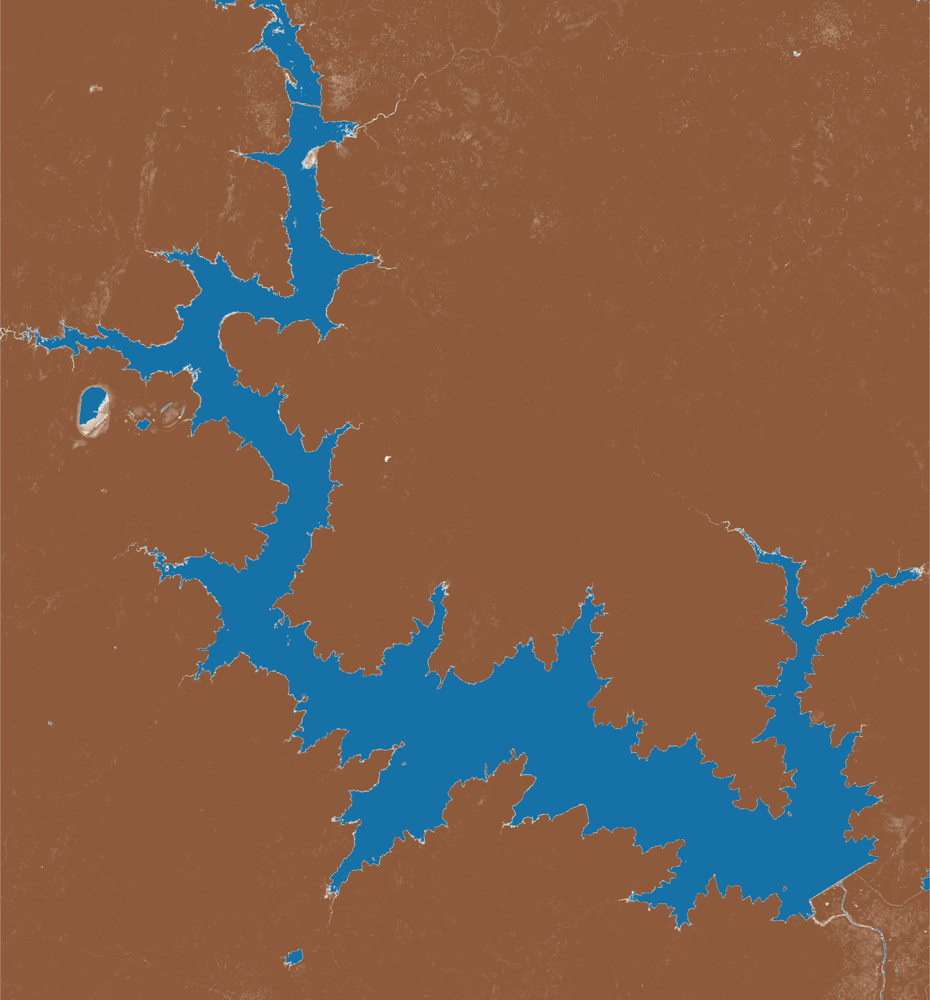
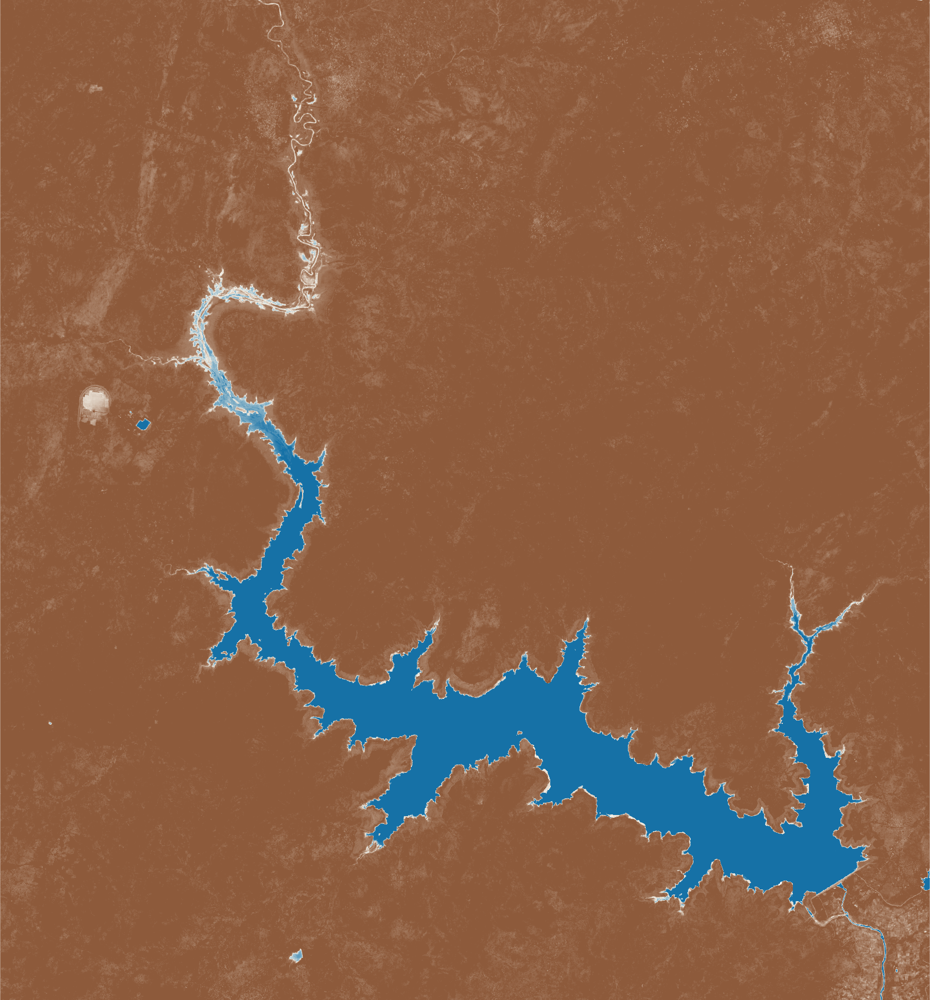
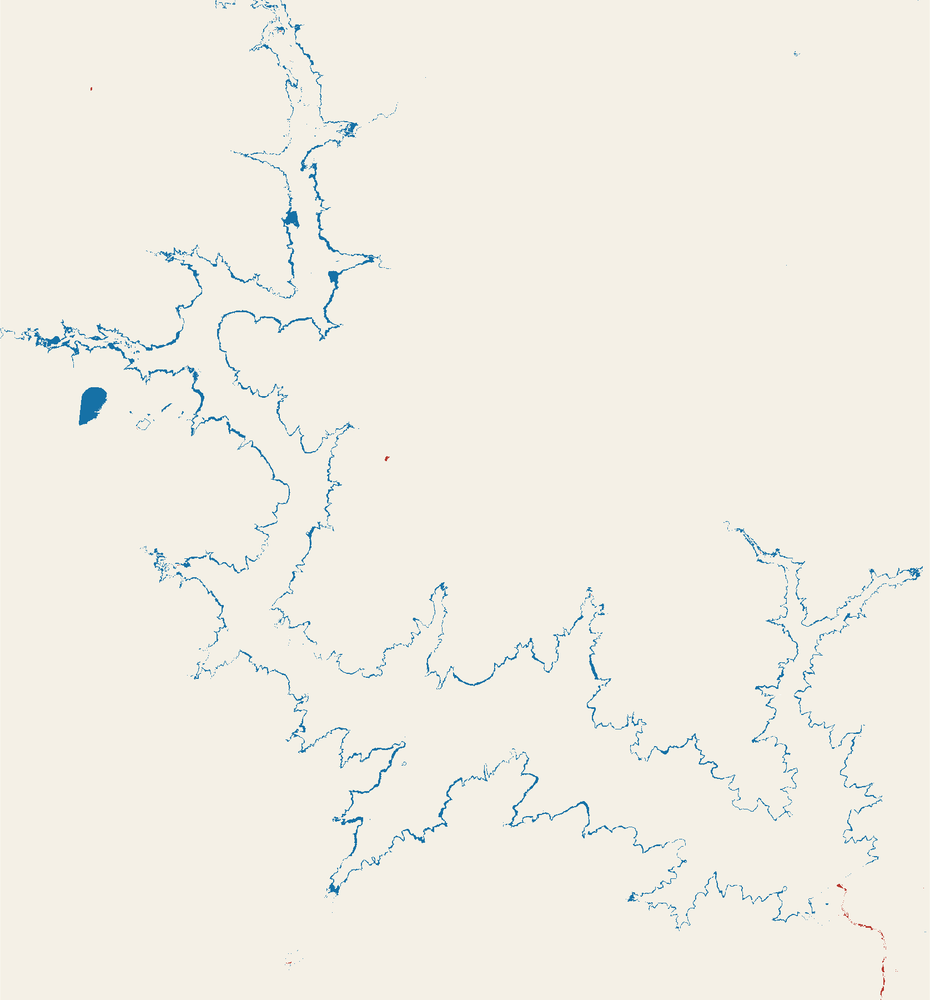
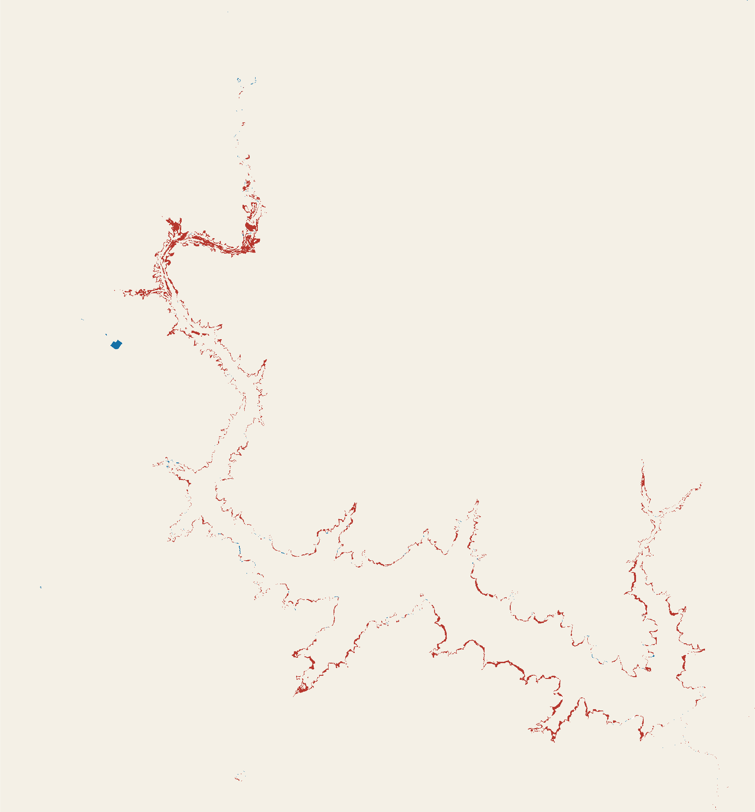

Bagré reservoir · local review case study
See the water story across the season.
A practical surface-water monitoring demonstrator for agencies, NGOs, and water-resource managers working around irrigation, hydropower, and reservoir operations.
What the demonstrator found
More mapped water after the rains. Less before them.
The post-rain mapped footprint increased by about 11.6 percent from 2023 to 2025. The pre-rain footprint decreased by about 23.1 percent over the same years.
After the rains
Post-rain water extent

Post-rain water extent · Oct–Dec 2025
Before the rains
Pre-rain drawdown

Pre-rain drawdown · Feb–Apr 2025
Change detection
Where did the mapped water change?
Blue shows newly classified water compared with the previous year. Red shows water no longer classified. Pale areas did not change class.
This analysis does not prove the cause of change. Water-level records, rainfall observations, reservoir releases, irrigation calendars, and field checks are required before operational conclusions.


What HMServices can deliver
A repeatable water-watch service for real decisions.
Seasonal maps, classified water-area trends, a concise technical note, and a clear review of limits and next field checks.
Discuss a monitoring need